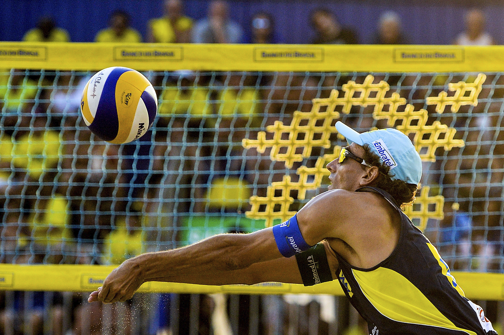
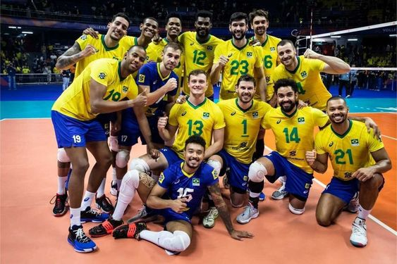
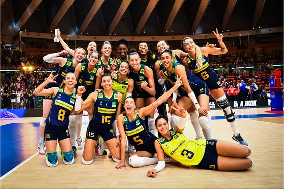

- Os cinco melhores jogadores masculino brasileiro de 2024?
- As cinco melhores jogadoras feminina brasileira de 2024?
O vôlei surgiu em 1895 nos Estados Unidos. O esporte foi criado por William George Morgan, diretor de Educação Física da Associação Cristã de Moços (ACM) da cidade de Holyoke, no estado de Massachusetts. A modalidade foi criada na intenção de realizar um esporte durante o inverno em local fechado.

Quais o objetivo do vôlei?
O objeto usado para a prática de vôlei é uma bola e o objetivo principal do jogo consiste na marcação de pontos ao mandar a bola para o campo adversário e fazer com que ela toque o chão. A instituição responsável pela organização de eventos e da regulação das regras é a FIVB, Fédération Internationale de Volleyball. O objetivo do jogo é fazer com que a bola passe sobre a rede fazendo-a tocar no chão da quadra adversária, evitando que os adversários façam o mesmo.
Em primeiro lugar o jogador Bruninho, levantador, ele possui 1,90 de altura. Em segundo lugar o jogador Thales, líbero, ele possui 1,90 de altura. Em terceiro lugar o jogador Leal, ponteiro, ele possui 2,01 de altura. Em quarto lugar o jogador Isac, central, ele possui 2,08 de altura. Em quinto lugar o jogador Alan, oposto, ele possui 2,02 de altura.
Em primeiro lugar a jogadora Ana Carolina, ponteira, ele possui 1,83 de altura.
Em segundo lugar a jogadora Carol, central, ela possui 1,83 de altura.
Em terceiro lugar a jogadora Diana, central, ela possui 1,94 de altura.
Em quarto lugar a jogadora Thaisa, central, ela possui 1,96 de altura.
Em quinto lugar a jogadora Gabi, ponteira, ela possui 1,80 de altura.
